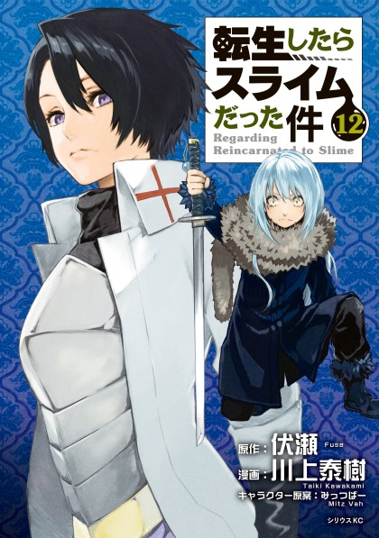
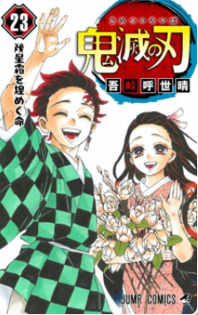

Naruto
Naruto Uzumaki é um menino que vive em Konohagakure no Sato ou simplesmente Konoha ou Vila Oculta da Folha, a vila ninja do País do Fogo. Quando ainda bebê, Naruto teve aprisionada em seu corpo a Kyuubi no Youko por Minato Namikaze (quarto Hokage, e seu pai), com a finalidade de salvar a Vila da Folha. Desde então, Naruto é visto por muitas pessoas como um monstro, não só pelos familiares das pessoas mortas pela Kyuubi, mas também por pessoas que não toleram suas brincadeiras, já que o mesmo é extremamente hiperativo, incompreendido e solitário. Naruto sonha em se tornar o Hokage de sua vila, um ninja poderoso e respeitado, para assim poder ser reconhecido por todos.


